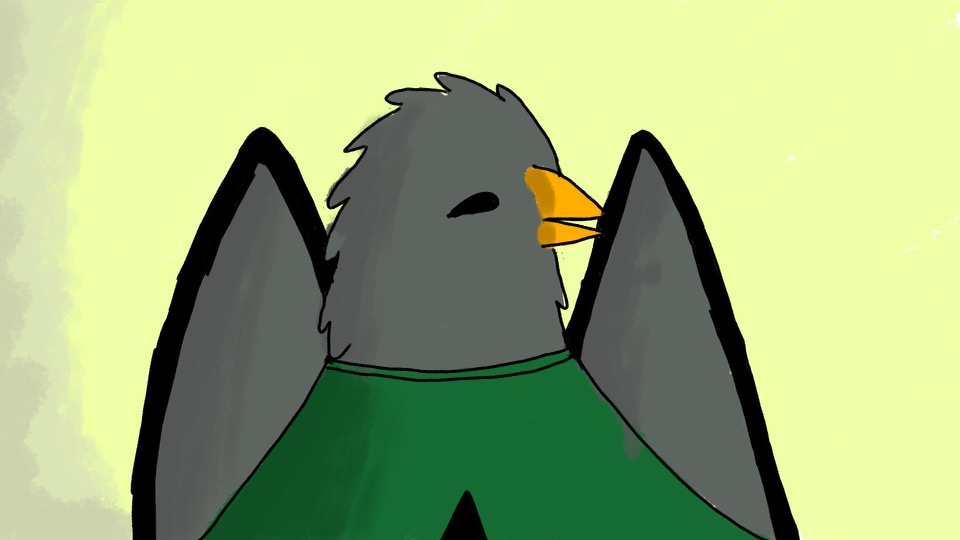
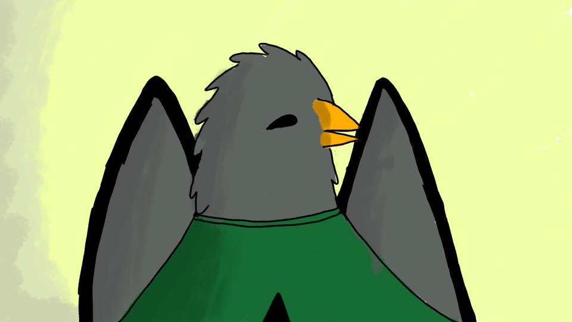

There is a new childrens TV show called City Animals and parents could not be happier. Lots of children all over the world are tuned in to see what will happen next in this amazing new show. In this story, three friends travel to Manhattan, New York, and need to find their way around together. This show revolves around three friends, Trix (a cat), Benjamin(a bird), and Cedar(a bear). Each character has a personality that makes up the show. During the span of the show, children would learn about how to act in large places, and they would develop street smarts, trust, and long-lasting friendships. Kids all over the world are waiting for another season of the addictive show that is City Animals. Everyone can learn valuable lessons from these friends. Overall this TV show is great for ages two to six! Everybody loves this show and I assure you if you sit down with your child and watch this you will too.